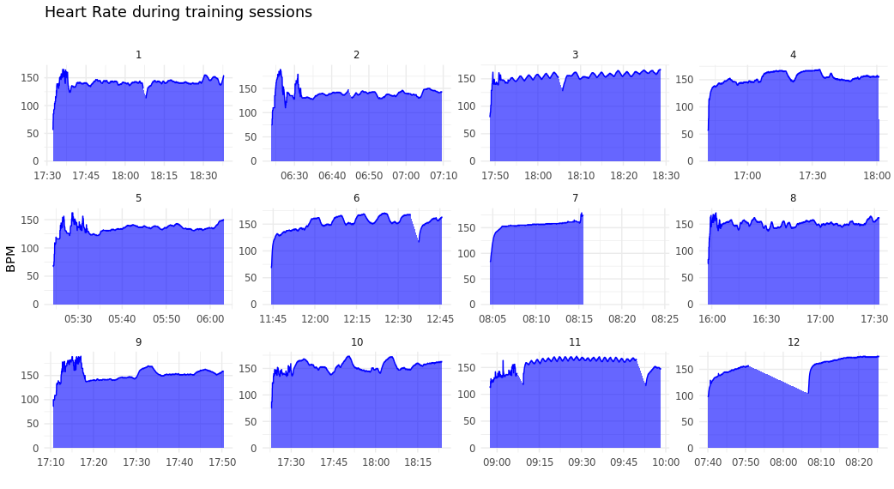
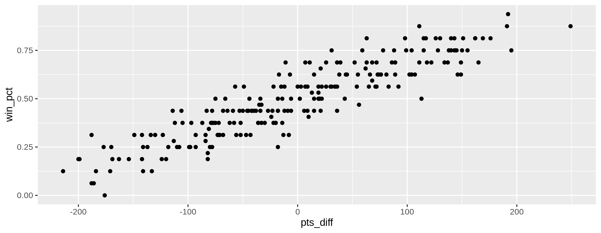
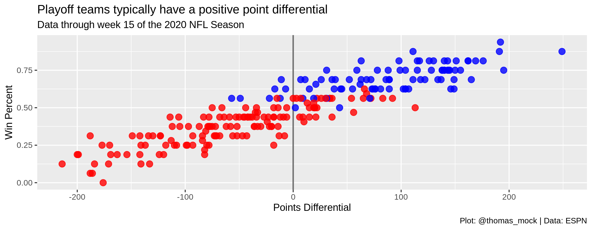
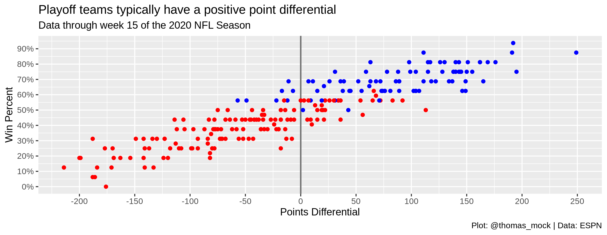
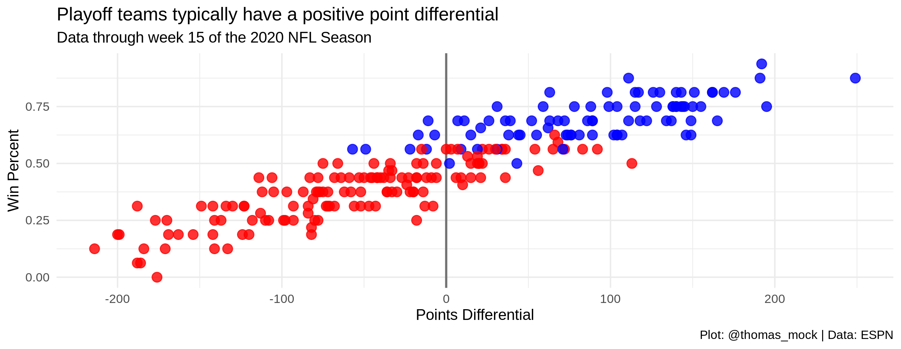

More Rmarkdown
2023-12-14
Text can be bold, italic, strikethrough, or inline code.
| mpg | cyl | disp | hp | drat | wt | qsec | vs | am | gear | carb | |
|---|---|---|---|---|---|---|---|---|---|---|---|
| Mazda RX4 | 21.0 | 6 | 160 | 110 | 3.90 | 2.620 | 16.46 | 0 | 1 | 4 | 4 |
| Mazda RX4 Wag | 21.0 | 6 | 160 | 110 | 3.90 | 2.875 | 17.02 | 0 | 1 | 4 | 4 |
| Datsun 710 | 22.8 | 4 | 108 | 93 | 3.85 | 2.320 | 18.61 | 1 | 1 | 4 | 1 |
| Hornet 4 Drive | 21.4 | 6 | 258 | 110 | 3.08 | 3.215 | 19.44 | 1 | 0 | 3 | 1 |
| Hornet Sportabout | 18.7 | 8 | 360 | 175 | 3.15 | 3.440 | 17.02 | 0 | 0 | 3 | 2 |
| Valiant | 18.1 | 6 | 225 | 105 | 2.76 | 3.460 | 20.22 | 1 | 0 | 3 | 1 |

img

plot <- nfl_stand %>%
mutate(
color = case_when(
season < 2020 & seed <= 6 ~ "blue",
season == 2020 & seed <= 7 ~ "blue",
TRUE ~ "red"
)
) %>%
ggplot(aes(x = as.numeric(pts_diff), y = win_pct)) +
geom_vline(xintercept = 0, size = 0.75, color = "#737373") +
geom_point(
aes(color = color),
size = 3, alpha = 0.8
) +
scale_color_identity() +
labs(x = "Points Differential", y = "Win Percent",
title = "Playoff teams typically have a positive point differential",
subtitle = "Data through week 15 of the 2020 NFL Season",
caption = "Plot: @thomas_mock | Data: ESPN")
plt_scales <- nfl_stand %>%
mutate(
color = case_when(
season < 2020 & seed <= 6 ~ "blue",
season == 2020 & seed <= 7 ~ "blue",
TRUE ~ "red"
)
) %>%
ggplot(aes(x = as.numeric(pts_diff), y = win_pct)) +
geom_vline(xintercept = 0, size = 0.75, color = "#737373") +
geom_point(aes(color=color)) +
scale_color_identity()+
scale_y_continuous(
labels = scales::percent_format(accuracy = 1),
breaks = seq(.0, 1, by = .10)
) +
scale_x_continuous(
breaks = seq(-200, 250, by = 50)
) +
labs(x = "Points Differential", y = "Win Percent",
title = "Playoff teams typically have a positive point differential",
subtitle = "Data through week 15 of the 2020 NFL Season",
caption = "Plot: @thomas_mock | Data: ESPN")

playoff_label_scatter <- tibble::tibble(
pts_diff = c(25,-125), y = c(0.3, 0.8),
label = c("Missed<br>Playoffs", "Made<br>Playoffs"),
color = c("#D50A0A", "#013369")
)
playoff_diff_plot <- nfl_stand %>%
mutate(
pts_diff=as.numeric(pts_diff),
color = case_when(
season < 2020 & seed <= 6 ~ "#013369",
season == 2020 & seed <= 7 ~ "#013369",
TRUE ~ "#D50A0A"
)
) %>%
ggplot(aes(x = pts_diff, y = win_pct)) +
geom_vline(xintercept = 0, size = 0.75, color = "#737373") +
geom_hline(yintercept = 0, size = 0.75, color = "#737373") +
geom_point(
aes(color = color),
size = 3, alpha = 0.8
) +
# ggtext::geom_richtext(
# data = playoff_label_scatter,
# aes(x = pts_diff, y = y, label = label, color = color),
# fill = "#f0f0f0", label.color = NA, # remove background and outline
# label.padding = grid::unit(rep(0, 4), "pt"), # remove padding
# family = "Chivo", hjust = 0.1, fontface = "bold",
# size = 8
# ) +
scale_color_identity() +
labs(x = "Points Differential", y = "Win Percent",
title = "Playoff teams typically have a positive point differential",
subtitle = "Data through week 15 of the 2020 NFL Season",
caption = stringr::str_to_upper("Plot: @thomas_mock | Data: ESPN")) +
scale_y_continuous(
labels = scales::percent_format(accuracy = 1),
breaks = seq(.0, 1, by = .10)
) +
scale_x_continuous(
breaks = seq(-200, 250, by = 50)
) +
theme(plot.subtitle=element_text(hjust=.5))